TFT Panel — user guide
TFT Panel turns a 7" touch screen (Elecrow CrowPanel 7", Waveshare ESP32-P4 7B or VIEWE ESP32-P4 7") into a remote for the music you play on your music server, and a screen that shows it: pause, skip, change the volume, pick the zone, search your library and start an album, all with a touch — while the cover and the words of the song scroll in time with the music.

All pictures in this guide come from the panel itself, in its showcase mode: the song, lyrics, zones and cover are invented.
What you need
- One of these screens, and a USB-C cable that carries data:
- Elecrow CrowPanel ESP32 Display 7.0" (DIS08070H), board V3.0;
- Waveshare ESP32-P4-WIFI6-Touch-LCD-7B (1024×600);
- VIEWE ESP32-P4 7" (UEP4S070H1024V600C-WB-C, 1024×600).
Other screens are not supported, even look-alikes with the same ESP32-P4 chip and the same display controller (for example the Guition JC1060P470C): their display needs different settings, and the installer would give them the Waveshare firmware. Their screen would stay dark. - A Roon system. The panel can get what is playing in either of two ways: - straight from your music server, with nothing else running. You enable TFT Panel once in Roon's Settings → Extensions and it is done; lyrics then come from a companion if you run one, else from the fallback LRCLIB-compatible server you give it (the public lrclib.net, or your own mirror); - from the free TextFromTrack companion on a computer of the same network, which also finds, ranks and lets you correct the lyrics. Several passages below assume it, because it is where the lyrics are managed rather than merely looked up. - Your Wi-Fi network name and password (2.4 GHz).
1. Install the firmware (once)
Before you flash: save what is on the board
Whatever your screen came with — a vendor demo, another firmware — is overwritten and cannot be downloaded again from anywhere. Saving it first takes one command and a few minutes:
bash
tools/backup-firmware.py --port /dev/cu.usbserial-XXXX # Windows: COM5
It says what the board is and which image it takes, copies the whole flash to
~/tft-panel-backups/, writes the copy's sha256 beside it, and then reads the flash back to
check the copy against the board. If anything is short or different it tells you there is no
backup rather than leaving you a file that looks like one. Nothing is written to the board.
One day, to put it back: tools/backup-firmware.py --port … --restore <the .bin>. That restores
the settings too — a restored panel rejoins your Wi-Fi and finds its music server with nothing to
set up again, because the copy holds the panel's whole memory. Which is also why the file deserves
the same care as a password, and should never be attached to a bug report.
It is also the only thing that tells the two ESP32-P4 boards apart before you flash them — the
browser installer sees one chip for both, and the wrong image leaves the screen dark. If you
already flashed and the screen stayed black, plug in the USB cable and read the serial console
(pio device monitor): the firmware says WRONG BOARD and names the image you need.
Flash it
- On a computer, open the web installer in Chrome or Edge.
- Say which screen you have. The page asks, because it only sees the chip and two of the three boards answer to the same one — picking for you would risk leaving a panel dark.
- Connect the panel with the USB-C cable — on the Waveshare, the port marked USB 1.1 — click Connect and pick the serial port. The dialog then offers Install, and names the screen you chose, so you can check it one last time. It takes about 3 minutes on the CrowPanel, about a minute on the ESP32-P4 boards.
- CrowPanel and VIEWE: the port is called USB Serial, CH340 or usbserial.
- Waveshare: USB JTAG/serial debug unit or usbmodem.
- CrowPanel or VIEWE on Windows: if no port shows up, install the CH340 driver and plug the panel again.
After this, updates come over Wi-Fi (see Updates).
2. The first start, screen by screen
Half a minute, from the screen you meet when you plug it in to the clock it settles on. Nothing here is typed except your Wi-Fi password.
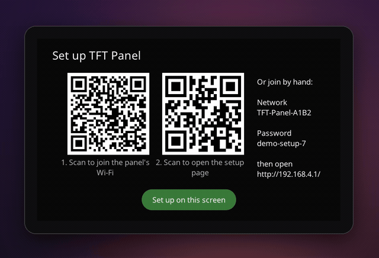
Better quality: first-start.mp4. The song, the networks and the password in the picture are invented.
| What you see | What to do | |
|---|---|---|
| 1 | Set up TFT Panel, two QR codes | Tap Set up on this screen, or scan the codes with a phone |
| 2 | Choose your Wi-Fi | Tap your network |
| 3 | A keyboard | Type the password, Connect |
| 4 | Looking for your music server… | Nothing. It is searching; this is the normal wait |
| 5 | The song, its words in time with it | Swipe for the cover, swipe again for the clock |
If step 4 never ends, the panel is on your network but nothing answered: see Troubleshooting. If the screen stays dark from the start, it is not the Wi-Fi — it is the wrong firmware for your board, and the USB serial console says WRONG BOARD with the image you need.
3. Connect it to your Wi-Fi, in detail
On its first start the panel shows two QR codes and a button. Two ways to go on:
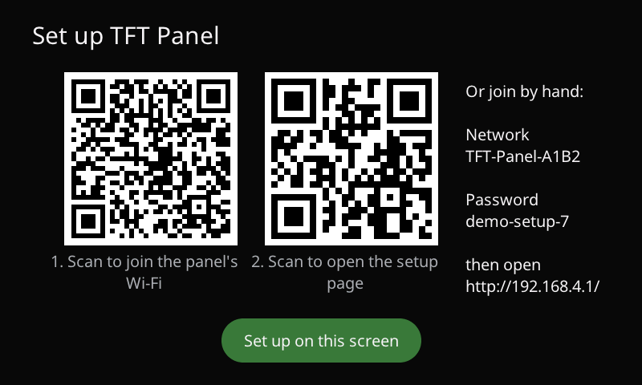
On the panel itself — tap Set up on this screen. The panel lists the Wi-Fi networks it hears, strongest first; tap yours, type its password on the keyboard (Show reveals it) and tap Connect. An open network needs no password.
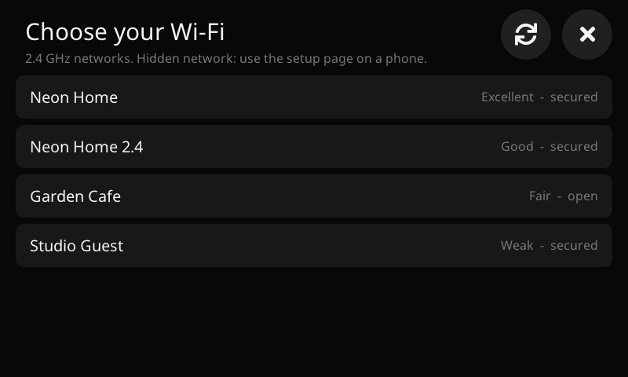
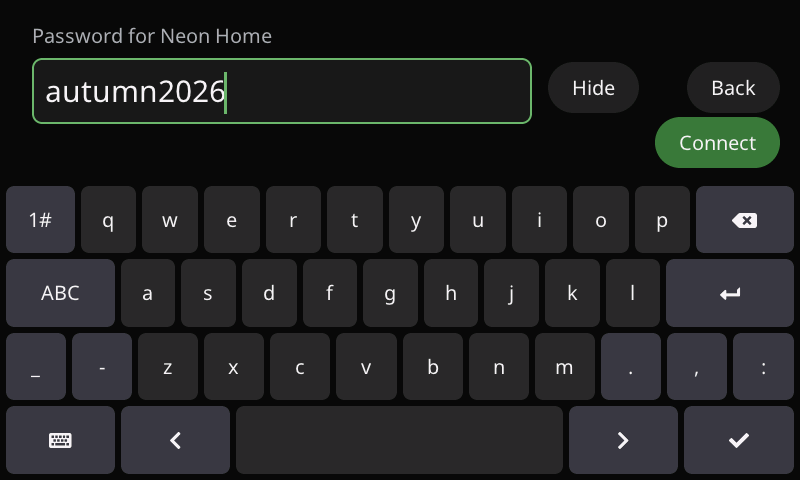
With a phone — useful for a hidden network, or to enter the companion's address:
- Scan the first code with your phone: it joins the panel's own network.
- Scan the second one: the setup page opens and lists the networks the panel hears. Tap yours, type its password, Save. A network that is not listed can be typed by hand.
The panel restarts, joins your network and looks for a music server — this is what it shows while it does, and it is nothing to worry about for the first few seconds:
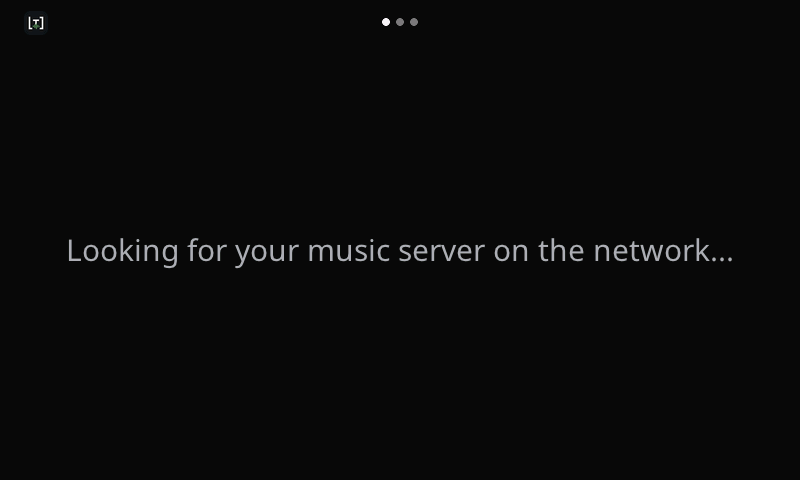
It finds the companion by itself. Only 2.4 GHz networks work (most routers offer both). To move the panel to another network later: Settings > Wi-Fi > Change.... If the companion is on another network segment, its address (and its access token, if you set one) can be typed on the same setup page.
4. Lyrics and cover
Roon serves no lyrics of its own, so the panel is told where to find them, on
its own page. It climbs a ladder: a TextFromTrack companion found on
your network always comes first — one container anywhere, ROON_ENABLED=false, nothing to enable in
Roon, and the panel finds it by itself; when there is none, it asks the fallback lyrics server
typed on the page, any LRCLIB-compatible address (the public lrclib.net, or your own mirror); with
neither, the screen says what is missing and where it is typed, and the panel looks again every
minute. Set the fallback to none if you came for the controls and the cover. The companion is also
what gives you your lyrics: the .lrc files beside your music, the words in your tags, the wrong
ones replaced, a per-song offset that is remembered — a companion from v0.7.1 answers the panel from
that same chain. The page says, under the field, which one the panel is asking today.
The panel follows the zone that is playing. The current line is large, the lines around it dimmed; they slide up as the song goes.
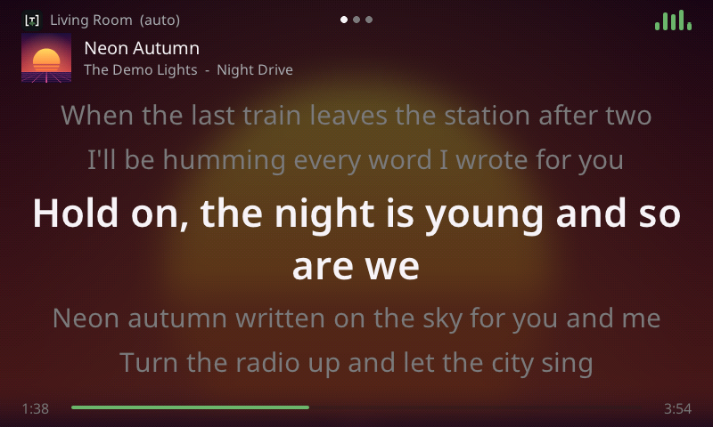
Swipe left or right to switch to the cover view, and back. The panel remembers your choice. A song without lyrics shows the cover view by itself, and returns to the lyrics as soon as there are some.
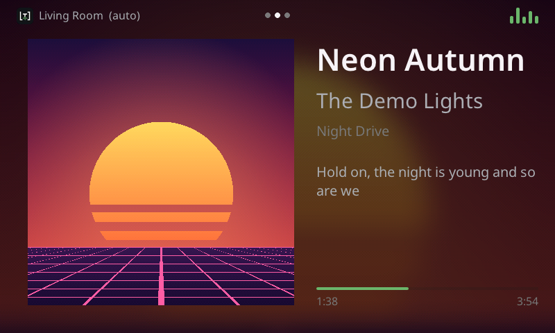
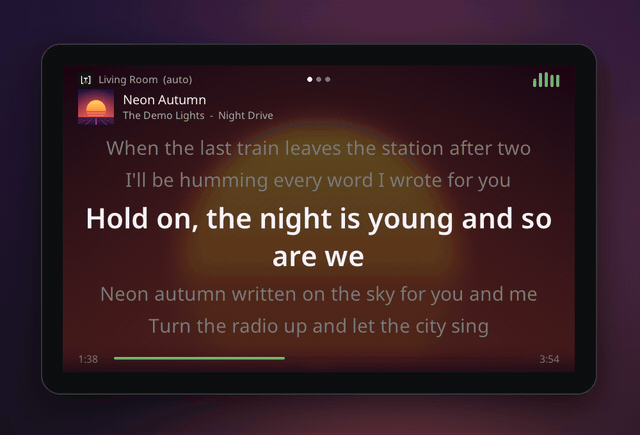
5. Controls
Tap the screen to show the controls (they hide after a few seconds): zone, previous, play/pause, next, volume − / +, settings.
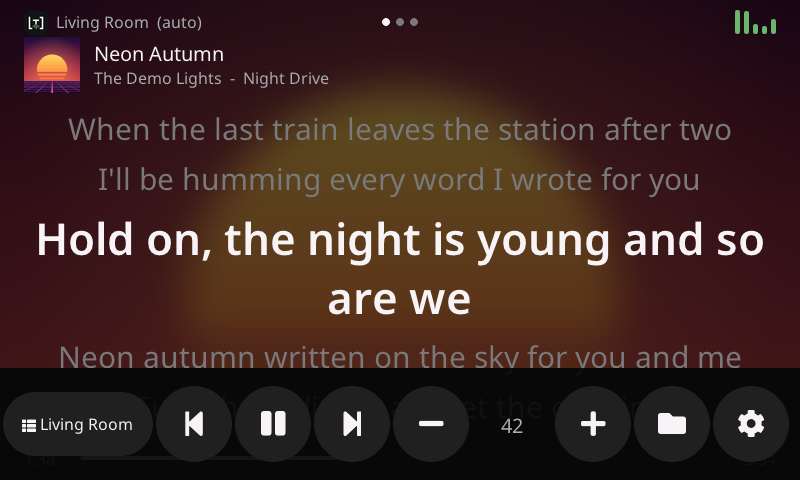
- Zone: follow the playing zone (auto), or stay on one zone.
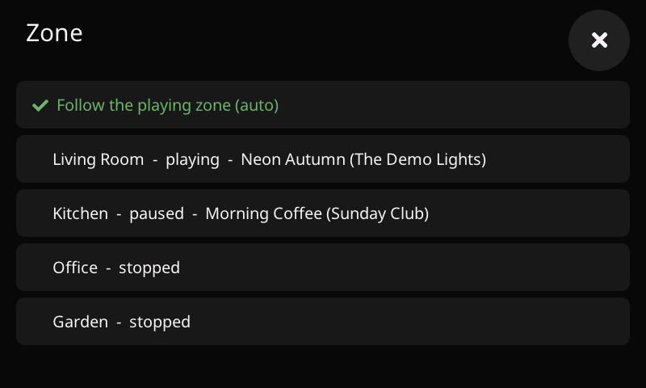
- Volume: tap the number between − and + for a slider and Mute.
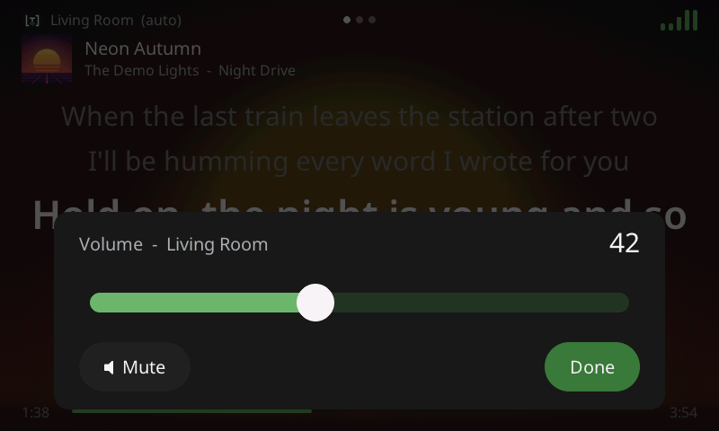
- Lyrics timing: if the lyrics run early or late for a song, press and hold the lyrics, then Earlier / Later (by 0.25 s) or Reset. It is saved for that song.
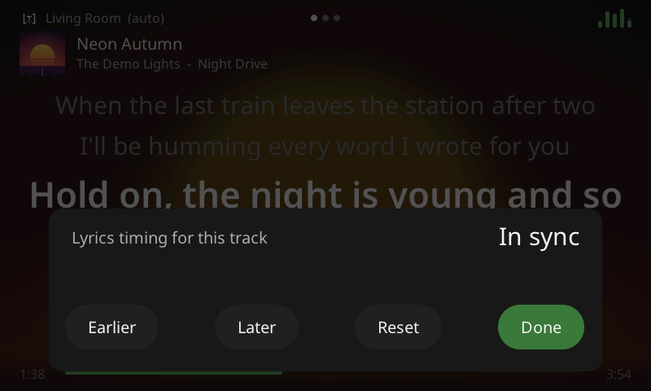
Find music
The controls bar has a folder button: the music library (on all three screens; on the CrowPanel since v0.1.17).
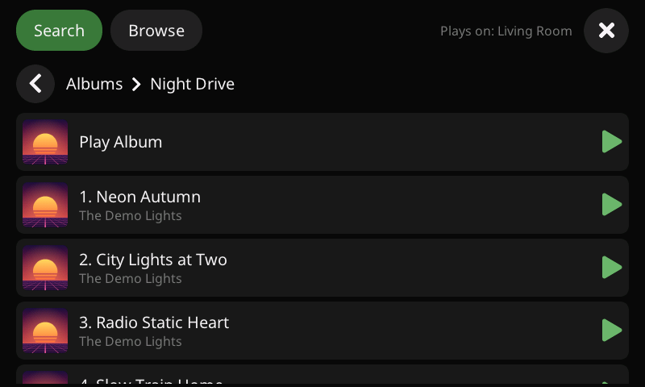
- Search: the green cursor blinks in the field; type an artist, album or track on the keyboard, then Search. The results come by kind (artists, albums, tracks…); tap one to open it.
- Browse: Roon's own menus — Library (artists, albums, tracks, composers, tags), playlists, radio, genres.
- ◀ goes back one level; Show more loads the rest of a long list.
- A row with a green ▶ can be played: tap it and choose Play Now, Add Next, Queue or Start Radio. It plays on the zone shown at the top right (Plays on: …), the one the panel follows; pick another zone with the zone button first.
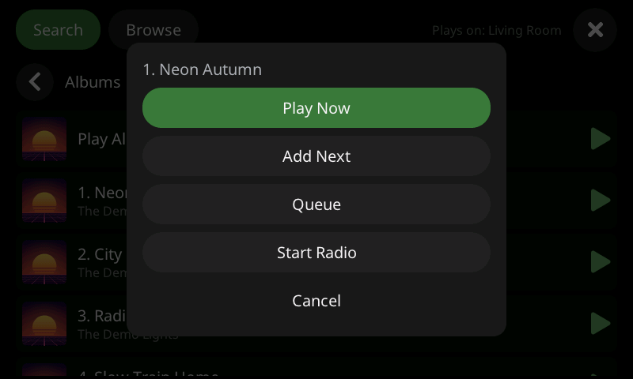
Browsing from the panel does not move what Roon's other apps or the companion's web player are showing.
From what is playing
On the cover view, the artist and the album under the title are tappable: the artist opens that artist's albums, the album opens its track list, ready to play. When the name is not exactly one thing in your library — several artists on a track, an album title shared by other records — the panel shows what it found and lets you choose rather than opening a guess.
6. Settings
The gear button opens the settings: brightness, colour warmth, when the screen turns off, how far ahead the lyrics show, the blurred cover background, smooth scrolling, the idle clock and its time zone, the zone, forgetting the Wi-Fi, the firmware version and updates.
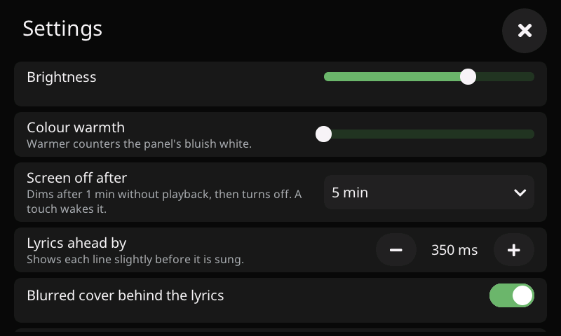
Colour warmth: this panel's white is bluish. Colour test shows white, greys and colours with a live slider: move it until the white looks neutral to you.
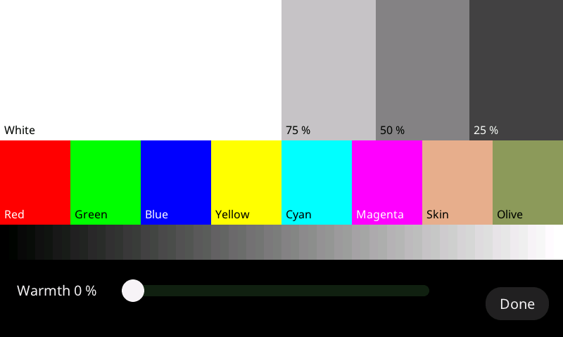
7. The clock, the weather and the news
The clock is both an idle screen and a view of its own: swipe to it like the lyrics and the cover. After a minute without music the panel shows it by itself, dims, and turns the screen off after the delay chosen in the settings. A touch, or music starting, wakes it.
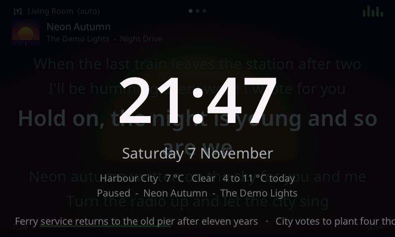
Give it a town and it shows the temperature, the sky and today's range beside the time. Towns
share their names, so add what tells yours apart: Montreal, Canada, Paris, Texas,
Lyon, France. The page says which town it settled on, with its coordinates, and says so plainly
when it cannot find the one you meant.
The title under the date is the track the panel is following, which may well have finished hours ago. So that you can tell one from the other at a glance, five small bars dance in the top right corner while music is playing and disappear when it stops — the lyrics and cover views have their progress bar for that, the clock had nothing.
Give it the address of an RSS or Atom feed and the headlines slide under the clock at reading pace. Both are typed on the panel's page, below. If nothing slides, the page says why, under the field: the feed did not answer, or the address holds a web page rather than a feed.
8. The panel's own page
Everything that has to be typed lives on one page, in any browser on your network:
http://tft-panel-xxxx.local — the settings screen shows it as a QR code, and its name, board,
address and firmware are written at the top, so two panels are never confused. The QR closes
itself as soon as the page asks for the code, which is shown on the same screen it was covering.
It carries where the music comes from, the companion's address and token, the fallback lyrics server and its token, the weather town and the news feed.
Changing something asks once for the six digits shown on that panel's screen: being on the network is not enough, you have to be in front of it. After that the panel remembers your browser for a month, so later changes are two taps; Forget this browser on the page undoes that, and so does forgetting the Wi-Fi or erasing the panel. A firmware upload always asks for a fresh code.
Updates
The panel looks for a new version every day. When there is one, Update appears at the top:
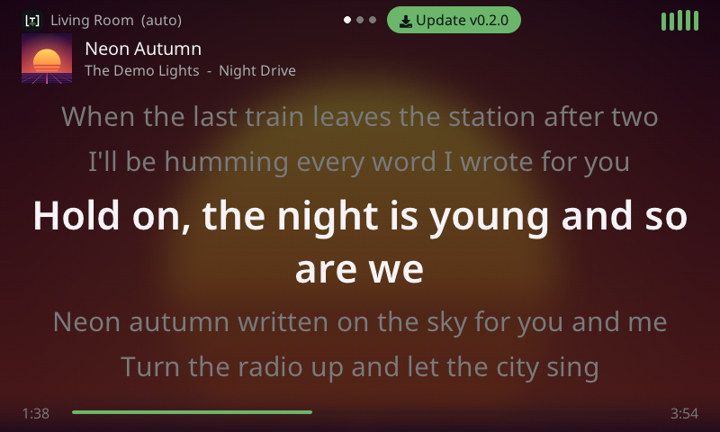
Tap it and confirm. The panel downloads the update, checks its sha256 against the one published with the release and refuses it if a single byte differs, then restarts (about a minute). Don't unplug it meanwhile — the screen says so, and shows how far it has got. There is nothing to back up first: the version you are running stays in the other half of the flash, and the panel returns to it by itself if the new one never starts properly.
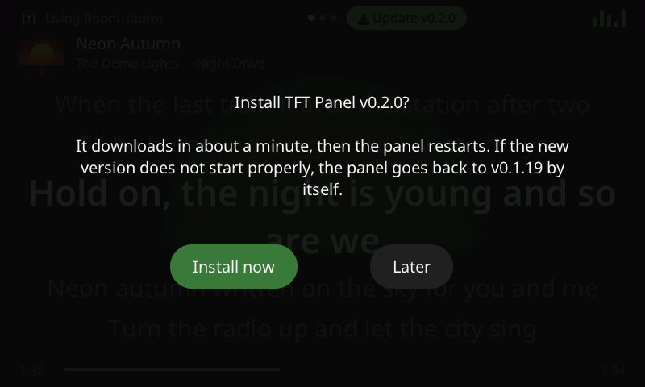
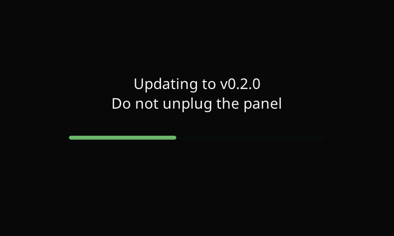
From a computer instead
Open http://tft-panel-xxxx.local/update (the name is shown in the settings, under About),
choose a firmware file, and type the 6-digit code the panel shows:
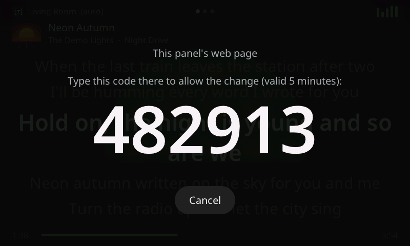
Beside the file there is a box for the sha256 published with each release, in the
…-vX.Y.Z.sha256 file next to the firmware. Paste it and the panel refuses the upload unless
every byte matches, naming both digests so you can see which file you actually have. Leave it
empty and the panel still tells you the digest of what it received, so you can compare afterwards.
The panel shows the same Updating… do not unplug picture as it does for an update of its own, from the first byte to the last, so you can see it working from across the room. If it refuses the file, it says so on its screen too, and goes back to what it was doing.
A wrong code is used up the moment it is refused: read the new one on the screen, or reload the page. And whatever happens here, the version you are replacing stays in the other half of the flash until the new one has proved it starts.
Troubleshooting
| You see | Do this |
|---|---|
| The setup QR codes come back | The panel cannot join your Wi-Fi for a minute: check the password, or that the network is 2.4 GHz. |
| "Looking for the TextFromTrack companion" | Start the companion on its computer; same network as the panel. If it runs on a laptop with a dock or a second network adapter, give the panel its address on the panel's page instead: a machine can announce an address that is not reachable from the panel. |
| "Enable TFT Panel in Roon" | Direct mode: open Roon → Settings → Extensions and enable it once. |
| The panel says Paused while music is playing | The panel shows what your music server is playing, and nothing else. Sound sent to the same amplifier from somewhere else — AirPlay, Spotify Connect, Bluetooth, an input on the amplifier — is invisible to it: the zone really is paused. |
| The weather shows the wrong town | On the panel's page, add a region or country after the name (Paris, Texas). |
| The page says the code is wrong | The code on the screen changes every five minutes; read the new one. |
| "No lyrics found for this track" | The lyrics server found none; the cover view shows instead. |
| No lyrics source on every song | No companion is on your network and no fallback server is typed, and the screen says so with the address of this panel's page. That page takes either answer: run the TextFromTrack companion on your network (the panel picks it up within a minute, no restart), or type the address of an LRCLIB-compatible server. It also states, under the field, what the panel is asking today and whether a companion was found. |
| Lyrics early or late for one song | Press and hold the lyrics, adjust Earlier / Later. |
| Lyrics early or late for every song | Settings → Lyrics ahead by. |
| The screen looks bluish or yellowish | Settings → Colour test, move the warmth slider. |